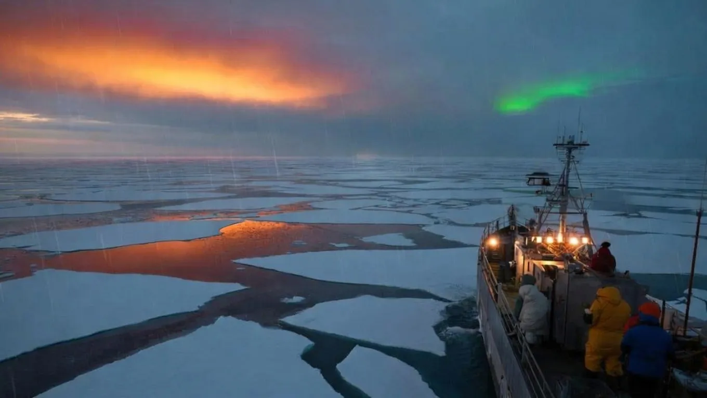

Early February Climate Signals: Why the Arctic is Behaving Strangely


If you're following the latest climate trends, you might have noticed that the Arctic is behaving strangely, especially during the early February climate signals. This abnormal behavior is characterized by unprecedented temperature fluctuations and melting ice caps, which have significant implications for our planet's ecosystem. As we explore the reasons behind this unusual phenomenon, we'll examine the latest data and expert insights to better understand the Arctic's climate signals and what they mean for our future.
The Arctic's strange behavior is not just a natural fluctuation; it's a clear indication of climate change. With global temperatures rising by 1.8 degrees Fahrenheit since the late 1800s, the Arctic is warming at a rate twice as fast as the rest of the planet. This accelerated warming is causing sea ice to melt at an alarming rate, with 13% of the Arctic's sea ice disappearing over the past three decades. As we delve into the world of climate science, it's essential to understand the intricacies of the Arctic's climate system and how it affects the entire planet.
Table of Contents
What's Driving the Arctic's Strange Behavior?
One of the primary factors contributing to the Arctic's unusual climate signals is the reduction of sea ice. As the ice melts, it exposes darker ocean waters, which absorb more solar radiation, further amplifying the warming effect. This self-reinforcing cycle is known as Arctic amplification. Additionally, changes in ocean currents and atmospheric circulation patterns are also playing a significant role in the Arctic's climate fluctuations. For instance, the North Atlantic Oscillation (NAO) has been weakening over the past few decades, allowing warm air from the south to penetrate the Arctic more easily.
Another crucial factor is the increase in greenhouse gas emissions, particularly carbon dioxide (CO2) and methane (CH4). These gases trap heat in the atmosphere, leading to global warming and climate change. The Arctic is especially vulnerable to these changes, as its fragile ecosystem is highly sensitive to temperature fluctuations. According to Dr. Jennifer Francis, a research professor at Rutgers University, "The Arctic is a canary in the coal mine for climate change. What happens in the Arctic doesn't stay in the Arctic; it has far-reaching consequences for the entire planet."
Understanding the Arctic's Climate System
The Arctic's climate system is complex and influenced by various factors, including ocean currents, atmospheric circulation patterns, and greenhouse gas emissions. To better understand these interactions, scientists use computer models and satellite data to simulate the Arctic's climate system and predict future changes. For example, the National Snow and Ice Data Center (NSIDC) uses satellite imagery to track sea ice extent and concentration, providing valuable insights into the Arctic's climate trends.
How Do Climate Signals Impact the Environment?
The Arctic's strange behavior has significant implications for the environment, from disrupting local ecosystems to influencing global weather patterns. As the Arctic warms, it alters the habitats of iconic species like polar bears, walruses, and arctic foxes, putting their very survival at risk. The loss of sea ice also affects the global ocean circulation, which can have far-reaching consequences for marine ecosystems and global food security.
The economic impacts of the Arctic's climate signals should not be underestimated. A report by the National Oceanic and Atmospheric Administration (NOAA) estimates that the loss of sea ice could cost the global economy up to $2.5 trillion by 2050. This is due to increased shipping costs, damage to infrastructure, and losses in the fishing industry. As Dr. Robert Corell, a climate scientist at the University of Miami, notes, "The Arctic's climate signals are a wake-up call for the global community. We need to take immediate action to reduce greenhouse gas emissions and mitigate the effects of climate change."
"The Arctic is a bellwether for the planet's health. What happens in the Arctic will have significant implications for the rest of the world. We need to pay attention to these climate signals and take action to reduce our impact on the environment."
— Dr. Katharine Hayhoe, Climate Scientist at Texas Tech University
| Climate Signal | Impact on the Environment | Economic Implications |
|---|---|---|
| Sea ice loss | Disrupts local ecosystems, alters habitats of iconic species | Up to $2.5 trillion in losses by 2050 |
| Temperature fluctuations | Affects global ocean circulation, influences weather patterns | Increased shipping costs, damage to infrastructure |
| Changes in ocean currents | Impacts marine ecosystems, affects global food security | Losses in the fishing industry, increased food prices |
Also Read
More trending stories →What's Next for the Arctic's Climate Signals?
As the Arctic continues to warm, we can expect to see more extreme climate events, from intensified heatwaves to increased precipitation. The IPCC's Fifth Assessment Report projects that the Arctic will continue to warm at a rate of 2-4 degrees Celsius by the end of the century, leading to devastating consequences for the environment and human societies. To mitigate these effects, we need to reduce greenhouse gas emissions and transition to renewable energy sources.
Expert Insights and Recommendations
According to Dr. James Hansen, a climate scientist at Columbia University, "The Arctic's climate signals are a clear warning sign that we need to take action to reduce our carbon footprint. We can do this by investing in renewable energy, increasing energy efficiency, and protecting natural carbon sinks like forests and wetlands." By working together, we can mitigate the effects of climate change and ensure a sustainable future for our planet.
- Reduce greenhouse gas emissions by transitioning to renewable energy sources and increasing energy efficiency
- Protect natural carbon sinks like forests and wetlands to mitigate the effects of climate change
- Support climate change research and development to better understand the Arctic's climate system and predict future changes
- Promote sustainable land use practices to reduce deforestation and habitat destruction
Key Takeaways
- The Arctic's strange behavior is characterized by unprecedented temperature fluctuations and melting ice caps
- The reduction of sea ice is a primary factor contributing to the Arctic's climate signals, with 13% of the Arctic's sea ice disappearing over the past three decades
- The Arctic's climate system is influenced by various factors, including ocean currents, atmospheric circulation patterns, and greenhouse gas emissions
- The economic impacts of the Arctic's climate signals could cost the global economy up to $2.5 trillion by 2050
Frequently Asked Questions
What is the current state of the Arctic's climate?
The Arctic is experiencing unprecedented temperature fluctuations and melting ice caps, with 13% of the Arctic's sea ice disappearing over the past three decades. This is due to a combination of factors, including greenhouse gas emissions, changes in ocean currents, and atmospheric circulation patterns.
How does the Arctic's climate affect the environment?
The Arctic's climate has a significant impact on the environment, from disrupting local ecosystems to influencing global weather patterns. The loss of sea ice affects the global ocean circulation, which can have far-reaching consequences for marine ecosystems and global food security.
What can be done to mitigate the effects of climate change in the Arctic?
To mitigate the effects of climate change in the Arctic, we need to reduce greenhouse gas emissions and transition to renewable energy sources. This can be achieved by investing in renewable energy, increasing energy efficiency, and protecting natural carbon sinks like forests and wetlands.
What are the economic implications of the Arctic's climate signals?
The economic impacts of the Arctic's climate signals could cost the global economy up to $2.5 trillion by 2050. This is due to increased shipping costs, damage to infrastructure, and losses in the fishing industry.
How can individuals contribute to mitigating the effects of climate change?
Individuals can contribute to mitigating the effects of climate change by reducing their carbon footprint, using public transport or carpooling, and supporting organizations that work to protect the environment. Every small action counts, and collective efforts can lead to significant positive change.
Conclusion
The Arctic's strange behavior is a clear warning sign that we need to take action to reduce our carbon footprint and mitigate the effects of climate change. By understanding the Arctic's climate system and the impacts of climate signals, we can work together to create a sustainable future for our planet. Remember, the Arctic's climate signals are not just a regional issue; they have far-reaching consequences for the entire planet. Let's take action today to ensure a better tomorrow for all.
Sarah Mitchell
Senior Tech Editor
Tech journalist with 8+ years of experience covering the latest in smartphones, EVs, AI, and consumer electronics. Bringing you accurate, well-researched stories from the world of technology.
Leave a Comment